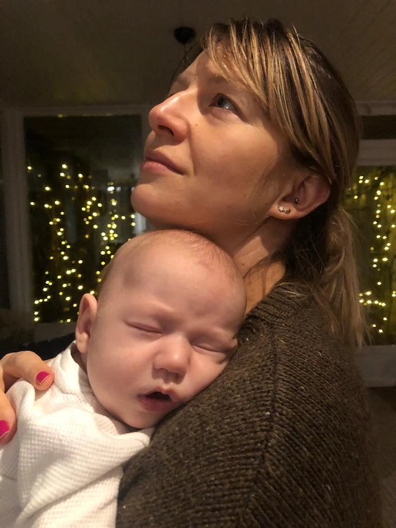
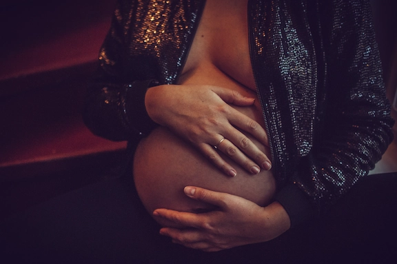

tel.: +48 600 32 58 59
email: marlena.podbielkowska@gmail.com
O fantazjach
Co to jest wewnętrzny obraz dziecka, które się jeszcze nie
pojawiło na świecie?
Zanim dziecko przyjdzie na świat zaczynamy przypisywać mu pewne
cechy opierając sie po częci na wyczuwalnej aktywnosci i reakcji
płodu a po części na własnej wyobraźni. W ten sposób powstaje
wyobrażone dziecko, które tworzą rodzice. Jak będzie wyglądać,
jaki będzie miało charakter,czy będzie miało poczucie humoru jak
mama, czy będzie szybko biegał jak tata, czy będzie chodził po
drzewach, czy raczej będzie się pod nimi wylegiwał z książką.
Obraz ten uruchamia w rodzicach emocje i pokazuje jak przeżywają
rozwijające się dziecko. Czasem świadomie czasem mniej świadomie
uruchamiają się nadzieje i życzenia dotyczące potomka. Ten stan
oczekiwania budzi bardzo dużo różnych emocji.
Wyobrażenia na temat dziecka niekiedy pokazują rzeczywistość
wewnętrzną rodzica. To jak przeżywa nadchodzącą zmianę-cieszy
się i ma poczucie, że nadchodzi coś wartościowego co go wzbogaci
czy obawia się, że dziecko mu coś odbierze i zniszczy. Kierunek
tych stanów może znacząco zabarwić czas ciąży a potem
macierzyństwa dlatego tak ważne jest przyglądanie się sobie i
ewentualnie reagowanie na myśli i emocje, które zaczynają nas
zbytnio niepokoić.
Ostatnio widziałam fajny film „NINJABABY” film, który w obrazowy
sposób pokazuje jak bohaterka, która niespodziewanie zachodzi w
ciąże, swoje wątpliwości wyraża w rozmowie z tym właśnie
wyfantazjowanym dzieckiem👶
Polecam serdecznie rzucić okiem😉
Ps. Można go zobaczyć na NoweHoryzonty vod
czytaj więcej...

O poczuciu winy
Zanim zostałam mamą, często słyszałam o poczuciu winy u
matek.
Nie znam mamy, która nie byłaby zaznajomiona z poczuciem winy.
Przezywanie tego uczucia, jest spotykane u ludzi, często
związane z tendencjami osobowościowymi.
Nie mogę oprzeć się wrażeniu, że u mam ten stan pojawia się
niezależnie od osobowości.
Na początku macierzyństwa nie bardzo mogłam zrozumieć o co w tym
chodzi. Nie miałam wyrzutów, kiedy wychodziłam sama z domu,
nawet kiedy pojawiały się momenty, w których zapominałam, że mam
dziecko. Żyłam w naiwnym przekonaniu- mnie to ominęło.
Aż do momentów, w których zaczęło brakować mi tych kilku sekund
cierpliwości. Przemęczenie, obowiązki, płacz. Życie dawało się
we znaki intensywnie, możliwości spokojnego reagowania na
kolejną awanturę o kardynalny błąd jakim było ,obranie banana ze
skórki, topniały wraz z nadzieją że u mnie będzie inaczej.
Tak jakby to jednoznacznie oznaczało, że poniosłam porażkę.
Podniosłam głos, krzyknęłam, niezbyt delikatnie po raz piąty
odsunęłam od lodówki przeklęłam pod nosem w czasie wycierania
podłogi po trzecim rozlanym jogurcie z rzędu.
Zapalam się w środku, czuje wściekłość i rozpacz, trwa dosłownie
chwile, czasem kilka sekund. A odraz za tym maszerują wstyd i
poczucie winy.
To się przydarza wszystkim rodzicom. I jest normalne. Jest
szansa, że taka sytuacja powtórzy się więcej niż raz.
Dlatego w takich chwilach jak emocje opadną i dalej będziesz
najlepszą mamą, jaką możesz być, przypomnij sobie to zdanie: Na
jakość relacji wpływa bardzo wiele interakcji-nie pojedyncze
sytuacje, które przebiegają nie tak jakbyśmy sobie tego
życzyli😘
czytaj więcej...

O matkach co siedzą w domu
Mityczna matka, która urodziła dziecko i usiadła w domu.
Usiadła i siedzi.
Co prawda wykonywanie codziennie tych samych czynności nie jest
zbyt inspirujące, ale nie to jest największym
wyzwaniem.Najtrudniejsze w tym siedzeniu jest bycie dostępnym
emocjonalnie dosłownie 24 godziny na dobę i kontenerowanie
emocji małego człowieka. Plus oczywiście radzenie sobie ze swoim
huraganem przeżyć a niekiedy jeszcze z emocjami partnera. Z tego
robi się pokaźna furmanka złości, frustracji, zmęczenia,
bezsilności, poczucia osamotnienia, wrażenia, że nie robi się
nic rozwijającego dla siebie, że nie jest się już atrakcyjną
kobieta albo nie jest się już człowiekiem tylko maszyną do
zaspokajani potrzeb.
Wstawanie-karmienie-przewijanie-podnoszenie-przewijanie-wycieranie-
odkurzanie-przytulanie -usypanie-
kąpanie-zabawianie-pranie-przestawianie-ocieranie łez- czekanie.
Oczywiście podstawą jest miłość, wdzięczność i radość z
przebywania z ze swoim dzieckiem, ale i te potrafią być
przytłaczające.
> I tak codziennie siedzą te matki bez
możliwości odwrotu albo ucieczki, z poczuciem winy, że nic nie
robią 😣
czytaj więcej...

O dbaniu o siebie
”Idź, umów się na paznokcie, zadbaj o siebie” - która mama
małego dziecka tego nie słyszała? Swoją drogą można by się
zastanawiać, od kiedy paznokcie stały się flagowym elementem
szczęśliwej kobiety.
Jedna z uczestniczek warsztatów, które miałam przyjemność
prowadzić powiedziała, że ona przez całe życie nie była tyle
razu na paznokciach co w czasie urlopu macierzyńskiego. Na zły
humor i chandrę -” Kochanie to może zapisz się na paznokcie".
Po dłuższej dyskusji ta sama uczestniczka przyznała, że tak
naprawdę to ona sama nie wie co znaczy dla niej zadbanie o
siebie. To, co pierwsze przyszło na myśl innej dziewczynie na
tych samych warsztatach to, leżenie na łóżku, w ciemnym i cichym
pomieszczeniu.
Jak sobie o tym myślę to zadbanie o siebie oznacza że cokolwiek
robię , albo i nie robię to efektem ma być lepsze samopoczucie,
wrażenie, że jest mi lepiej i jestem w stanie przetrwać kolejny
dzień z większym luzem.
Ostatnio zdałam sobie sprawę, dlaczego nawet ledwo żywa jestem w
stanie zebrać się na basen jak mam chwile dla siebie. Nie dla
sportu tylko dlatego, że w wodzie razem z ciałem pływają moje
myśli i nawet po spędzeniu większości czasu w jacuzzi jest mi po
prostu lżej, na ciele i na głowie🙃
A co Ty możesz zrobić dla siebie, żeby było ci lżej?😎
czytaj więcej...
O Psycho-specjalistach
Psychiatra, psycholog, psychoterapeuta jeden pies- wciąż zdarza
mi się usłyszeć taki komentarz, co oznacza że, nie dla
wszystkich jest jasne na czym polega różnica. Świat rodziców
jest wystarczajaco zamotany dlatego kiedy potrzeba pomocy
specjalisty warto wiedzieć który jest od czego, i dlatego biegnę
z wyjaśnieniem.
Psychiatra jest LEKARZEM. Osobą, która, studiowała medycynę i
zrobiła specjalizację w dziedzinie psychiatrii. Zajmuje się
zapobieganiem oraz leczeniem zaburzeń i chorób psychicznych.
Tak, to on zaleca leczenie farmakologiczne i wypisuje recepty.
To, że ktoś jest psychiatrą nie oznacza, że posiada szeroko
rozumianą wiedzę psychologiczną dotyczącą działania psychiki
człowieka Oczywiście może tak być, nawet dobrze żeby tak było,
ale nie zawsze tak jest. Psychiatra posiada wiedzę medyczną
odnośnie objawów i stawia diagnozę psychiatryczną. Psycholog
jest to osoba, która ukończyła 5 letnie jednolite studia
magisterskie, uzyskując tytuł magistra na kierunku psychologia.
Psycholog posiada wiedzę o działaniu psychiki człowieka,
mechanizmach społecznych i zachowaniu. Może robić testy
psychologiczne, stawiać diagnozę psychologiczną, wydawać opinie,
udzielać wsparcia psychologicznego i psychoedukować Ponadto
psycholog w toku rozwoju swojej edukacji może dodatkowo odbyć
specjalizację zawodową (w psychologii klinicznej człowieka
dorosłego, dziecka lub dla biegłych sądowych). Psycholog może
również odbyć 4-letnie szkolenie w zakresie psychoterapii i
uzyskać kwalifikacje psychoterapeuty. Psychoterapeuta to odrębny
zawód polegający na leczeniu zaburzeń psychicznych metodami
psychoterapeutycznymi. Może, ale nie musi być psychologiem.
Wymagane jest ukończenie studiów humanistycznych lub medycznych.
Osoba nazywająca się psychoterapeutą powinna ukończyć
podyplomowo szkołę psychoterapii. Ważną częścią uprawiania
psychoterapii jest poddawanie swojej pracy regularnej
superwizji.
Szkoły psychoterapii prezentują różne podejścia odnoszące się do
rozumienia i leczenia zaburzeń pacjenta oraz do sposobu pracy w
relacji terapeutycznej. Do najbardziej popularnych należą
podejścia: psychodynamiczne, psychoanalityczne,
poznawczo-behawioralne.
czytaj więcej...
O cierpliwości
Jeśli jest jeszcze jakiś niedowiarek, który zastanawia się, o co
tyle hałasu, z tym że matka ma myśleć o sobie i jak o sobie
skoro to dziecko jest najważniejsze, i jak niby to całe „dbanie
o siebie” miałoby wpłynąć na relacje z dzieckiem to już pokazuję
na przykładzie cierpliwości.
Cierpliwy, czyli znoszący ze spokojem przeciwności i
przykrości.
“Ty musisz jako matka nauczyć się cierpliwości”, aha, czyli
musisz zacisnąć zęby, odsunąć swoje potrzeby, rozłożyć dywan
miłości dziecku i cierpliwie znosić jak cały Twój mikro świat
urządza sobie na nim balangę.
Dbanie, czyli uważać coś za ważne, przejmować się tym.
Ile razy zdarzyło się każdej mamie, krzyknąć, burknąć na
dziecko, albo w ogóle je zignorować, kiedy przemęczona ledwo
stała na nogach, po wypitej wieczorem zimnej porannej kawie, z
telefonem w ręku i litanii nieodczytanych spraw do załatwienia.
“ Matka powinna siedzieć w domu z dzieckiem, a nie latać po
koleżankach”, chwila oddechu w samotności, spokojnie zjedzone
śniadanie, pół godziny, żeby w spokoju odpisać na maile nie
mówiąc już wyjściu z koleżankami, albo o Zeusie! Weekend bez
dziecka pozwala odetchnąć, zobaczyć swoje życie w szerszej
perspektywie niż pokój -kuchnia-łazienka, regeneruje zasoby
energetyczne niezbędne do znoszenia ze spokojem codziennych
przeciwności mamy zajmującej się dzieckiem, bo żeby mama miała
czym się dzielić z innymi potrzebuje najpierw sama się
nakarmić😎
czytaj więcej...

O micie matki polki
Czuję dyskomfort kiedy słyszę określenie Matka Polka na
współczesną kobietę.
Od zawsze miałam intuicyjny sprzeciw do tłumaczenia zachowań
matek poprzez porównywanie do Matki Polki, kobiety, która całe
swoje życie poświęciła rodzinie i wychowaniu dzieci w duchu
tradycyjnych i patriotycznych wartości.
“Bo one same tak wybierają, bo one siedzą w domach, bo one nie
proszą o pomoc, bo one robią z siebie cierpiętnice, jak one
wogóle wyglądają te roszczeniowe, Matki Polki”
Takie uproszczone postrzeganie poprzez pryzmat Matki Polki
uwalania od podjęcia się zrozumienia matki jako normalnej osoby
bez przypinania łatek.
Mit Matki Polki niesie za sobą cały szereg przekonań na temat
kobiety-matki.
Używanie tego określenia wobec współczesnej matki , umacnia
pasywny model w którym sama kobieta nic nie znaczy ,a jej
wartość jest mierzona jedynie poprzez właściwości reprodukcyjne
,które mają znaczenie dla rozwoju społeczeństwa a pózniej
poprzez dokonania swoich dzieci. A jakby przyjrzeć się temu
jeszcze głębiej siedzi w tym wzór kobiecości , jako dobrej żony
– pracowitej, posłusznej i uległej, dbającej o zdrowie męża,
umiejącej kierować gospodarstwem. W dodatku ma charakter
wykluczający uwzględniający jedynie matkę biologiczną w roli
opiekunki potomstwa, co wyłącza między innymi mężczyzn, rodziców
adopcyjnych, innych opiekunów.
Odnoszę wrażenie że, Mit Matki Polki się zdezaktualizował i czas
pożegnać się z nim w codziennej narracji🤔
czytaj więcej...

O wiosce wsparcia
Często słyszę po spotkaniach towarzyskich w których
uczestniczyły dzieci stwierdzenie: „jednak z dzieciakami życie
się nie kończy”. Wyobrażam sobie że ,za tym stwierdzeniem stoi
strach przed wyizolowaniem od ludzi, i komunikat o samotności
matek.
Żyjemy często w zamkniętych nuklearnych (2+1) rodzinach,
pozbawieni bliskości krewnych, oraz innych form wsparcia
społecznego (jak choćby sprawdzona sąsiadka ), co odbija się
głównie na tych , którzy dźwigają ciężar opieki na dzieckiem
czyli zwykle kobiety ( choć powiedziałabym że, taki stan rzeczy
wpływa niekorzystnie na wszystkich członków rodziny).
Wciąż w nieświadomości społecznej pływają przekonania typu :
taka kolej rzeczy i każda matka musi wysiedzieć swoje ,urodziłaś
to radź sobie sama, każdy jest odpowiedzialny za swoje życie (
tak, ale to nie podwarza możliwości korzystania ze wsparcia
innych) , każdy sobie rzepkę skrobie. Te i inne tego typu bzdury
niebezpiecznie tworzą obawy w głowie kobiet przed „wychodzeniem
do ludzi i dzieleniem się troskami , szczególnie z innymi
kobietami . Skutkuje to cichym zmaganiem się , owianym tajemnicą
, więc nikt nic nie wie, w jakim zakresie inni borykają się z
tym samym problemem.
I tu właśnie cała na biało wjeżdża wioska wsparcia. Samotne
zmaganie się z macierzyństwem jest bardzo trudne. Liczenie na
wsparcie tylko jednej osoby, partnera jest bardzo ryzykowne oraz
obciążające i tak już powichrowany związek. Dlatego jeśli nie
dane nam jest żyć blisko dostępnej , kochającej rodziny, musimy
same zadbać o zbudowanie wokół siebie społecznej sieci która,
może mieć ogromny wpływ na nasz dobrostan psychiczny. Kontakty
społeczne spełniają potrzebę bycia dostrzeganą i rozumianą.
Istnieją dowody naukowe na to że, spotkania z innymi ludźmi z
naszych kręgów społecznych a nawet z tymi którzy funkcjonują na
ich obrzeżu powodują nie tylko poprawę naszego samopoczucia ,
również niosą za sobą korzyści zdrowotne.
Dlatego ogromnie zachęcam to rozejrzenia się wokół siebie ,na
spacerze, w osiedlowej kawiarni czy przypadkiem nie krąży druga
mama z wózkiem .Istnieje spore prawdopodobieństwo że, nie
starczy jednej kawy do omówienia wspólnych tematów😊
czytaj więcej...
O bardzo złej matce
Przez zaciśnięte zęby mamroczesz pod nosem „kurwa idź już spać”,
patrzysz w sufit i odliczasz do dziesięciu obok, rozbawionego
dwulatka który zamiast spać układa wieże z poduszek z których
skacze prosto na twoją twarz, napływają ci łzy do oczu i
mruczysz „kurwa jego mać”.
Niech pierwsza matka rzuci kamieniem która nie doświadczyła
podobnych momentów.Potem jak już zmęczone dziecię padnie , i
staje się najcudowniejszym stworzeniem jakie widziałaś ,
ryzykując obudzeniem jeszcze musisz pocałować stópki i nosek,
zwlekasz się z łóżka na swoją „chwile dla siebie” , siadasz w
spokoju na kiblu, a z za rogu wyłazi to oblepione wyrzutami
sumienia pytanie „czy ja jestem złą matką?
Otóż tak ,każda z nas bywa zła , wściekła, zmęczona,
sfrustrowana, i miewa wszystkiego dość , ale czy to oznacza że
jesteśmy złymi matkami -NIE.
Nie wiem dokładnie skąd , ale pojawia się często przekonanie że
zostanie mamą równa się z byciem nadczłowiekiem który nie
powinien odczuwać już trudnych emocji. A prawda jest taka że,
odczuwamy ich jeszcze więcej i być może jeszcze głębiej . Tych
wspaniałych ale i takich, które produkują myśli o macierzyństwie
wywołujące wstyd i poczucie że jesteś jedyną kobietą na świecie
której „takie straszne rzeczy rodzą się w głowie”.
Nie łatwo opanować wściekłość kiedy dostajesz znienacka
traktorem w łeb. Wymaganie od sobie że, nie powinnam tak czuć
że, „dobra matka” napewno nie przezywa takich emocji jest
stawianiem sobie poprzeczki której nie da się przeskoczyć.
Jedynym rozwiązaniem jest zaakceptowanie emocji które się
pojawiają.Należy pamietać że nie stanowią one o tym jaką jesteś
mamą (najprawdopodobniej najlepszą jak możesz być). Może miewasz
ochotę na pięć minut wystrzelić swoje dziecko w kosmos, ale od
myśli do czynu bardzo daleka droga. Najważniejsze że, pokazujemy
swoim dzieciom że wszyscy przeżywamy trudne emocje ,to co jest
rozwojowe to radzenie sobie z nimi a nie udawanie że ich nie
ma😇
czytaj więcej...
O faktach
Nie ma róży bez kolców i nie ma rodzicielstwa usłanego płatkami
róż. Dlatego powiedzmy sobie na głos i przyjmijmy ten fakt do
wiadomości macierzyństwo (przyjmuje że posiadanie dziecka jest
trudne ale skupiam tu się na kobiecie) jest trudne. Często
kobiety boją się tego przyznać bo automatycznie pojawiają się
oceny-„aha skoro tak myślę , to znaczy że nie sprawdzam się w
roli matki, albo jestem złą matką”.Dlatego też powtórzę
macierzyństwo jest trudne dla każdej z nas niezależnie od
wszystkiego. W dodatku dołożę do pieca i powiem , kobieta ponosi
większe koszty całego przedsięwzięcia, ten fakt również dobrze
przyjąć do wiadomości. I w żadnym wypadku nie chce umniejszać
roli mężczyzn. Mam pewne podejrzenia że posiadanie dziecka jest
jednym z największych wyzwań z jakimi przyjdzie się zmierzyć
osobom które się na to decydują. Wejście w ten etap jest
obciążające emocjonalnie, powoduje wiele zmian i strat. Zmiana
dotyczy nowej tożsamości kobiety w roli matki, dotyczy mężczyzny
w roli ojca oraz pary do której dołącza totalnie
nieprzewidywalny trzeci. W związku z tym otwiera się horyzont
niezliczonych powodów do niezgody pomiędzy partnerami.
Terapeuta rodzin Jay Hale pisał „Naturalnie istnieje pewne
ryzyko, że pojawienie się dziecka może sprawić , iż małżeństwo
stanie się lepsze. Jednak są też spore szanse , że narodziny
potomka staną się istną symfonią okazji dla obu stron związku ,
aby wszystko sobie utrudnić”.
Niekończące się spory i dyskusje nie zdarzają się tylko w Twoim
związku, otóż śmiało śmiem stwierdzić że wszyscy rodzice jadą na
tym samym wózku, o czym też warto pamietać😉
czytaj więcej...
O social mediach
Lustereczko powiedz przecie kto jest najwspanialszą matką w
sieci na świecie?
Pokażcie mi osobę która po przejrzeniu postów na instagramie i
fejsbuku ma lepsze samopoczucie i wyższa samoocenę. Ja takiej
jeszcze nie spotkałam.A co robi większość z nas karmiąc dziecko
albo łapiąc chwile oddechu przy kawie albo na kibelku- sprawdza
powiadomienia. I mimo świadomości o tym jak działają social
media i jakie niosą zagrożenia dajemy się złapać w pułapkę
porównań. Wiele z nas w poczuciu odizolowania i otaczającego
chaosu szuka tam pocieszenia i kontaktu ze światem. Pułapka
polega na tym że, o ironio oglądając wpisy innych kobiet owiane
aurą beztroski i piękna jeszcze bardziej pogłębia wrażenie bycia
w szarej strefie nieporadności i nie radzenia sobie .Media
społecznościowe traktujemy jako wsparcie społeczne i zdajemy się
polegać na obserwowanych osobach jak na swoich przyjaciołach
albo co grosza jak na ekspertach między innymi w dziedzinach
zdrowia i psychologi. Równie niepokojącą konsekwencją
korzystania z mediów społecznościowych jest rosnące u kobiet
poczucie wstydu wobec tego że inni mają lepiej. Tzw.”insta
matki” nawet jeśli poruszają „trudne tematy” związane z
macierzyństwem to pokazują to w ładnym otoczeniu , z ładnymi
rzeczami , pokazując się w wersji niby codziennej ale wglądają
zwykle świeżo i pięknie. I mogę się tylko domyślać że tak nie
wygląda codzienność żadnej z nas , moja napewno nie i muszę
przyznać że bardzo często zapominam o zapalaniu świec do
porannej rutyny 😊. Czy to czyni mnie gorsza matka?Nie sądzę ale
czy idealny obrazek może sprawić że będę mieć co do tego
wątpliwości , jest duża szansa że tak.
Coraz więcej czasu spędzamy w świecie online , gdzie łatwo się
unika tematów naprawdę ważnych a wyolbrzymia inne rzeczy przy
czym bardzo trudno trzyma się faktów. Jednak trudno uniknąć
„bywania w tym świecie”. Dlatego może warto obserwować osoby
które podpowiadają nam rzeczy mogące nas wspierać , zwracać
uwagę na to jak się czuję zgłębiając profile kolejnych osób i
zadać sobie pytanie czy naprawdę teraz mi to potrzebne. I
oczywiście w miarę możliwości jak najczęściej zamieniać kontakty
online na te in real life. 😎
czytaj więcej...
O oczekiwaniach
Czy możliwe jest oczekiwać na dziecko i być wolnym od
oczekiwań?
Oczekujemy czy to będzie chłopiec czy dziewczynka, oczekujemy że
urodzimy w wybrany przez siebie sposób, w wybranym terminie,
oczekujemy że nasz partner ujawni ukrywany dotąd talent czytania
w naszych myślach a nasz związek uzdrowi się w dniu rozwiązania
,oczekujemy że nasze dziecko będzie wyjątkowe inne niż
jakiekolwiek dziecko które się pojawiło się na świecie , będzie
przesypało noce, jego płacz będzie nadawał bezpośredni sygnał o
konkretniej potrzebie który my wyjątkowe matki odczytamy zanim
wyda z siebie dźwięk. No właśnie my matki -inne niż inne matki,
będziemy karmić piersią a mleko będzie spływać niczym czekolada
w fabryce Charliego.
Oczekiwania mogą być przydatne o ile są realistyczne , dzięki
nim możemy się przygotować praktycznie i psychicznie na to co
nas czeka. Założyć roboczy plan z adnotacją że wszystko się
jednak „okaże w praniu”.Ale trudniejsza jest sprawa z
oczekiwaniami które oparte na wyobrażeniach , fantazjach są po
prostu nierealistyczne. Wtedy narażają nas na rozczarowanie ,
frustracje i poczucie klęski. Mało tego, odbierają nam możliwość
spontanicznego reagowania na bieżące sytuacje, mogą wręcz
powodować poczucie winy że robimy coś nie tak, nie umiemy w
bycie matką, ktoś się pomylił kiedy rozdawali dzieci. A to jest
prosta droga do nie kończącego się Tsunami samokrytyki.
A gdybyśmy mogły przejawiać bardziej realistyczne oczekiwania
albo oczekiwania które nie sprowadzają nas do oceny
„dobrze”-„źle”, albo (szaleństwo) gdybyśmy dały sobie szanse
zaakceptować dowolny scenariusz który pojawiłby się w naszym
życiu?🤔
czytaj więcej...

O podróży w nieznane
Po ogłoszeniu światu „jestem w ciąży” wiele z nas słyszało
-„zobaczysz wszystko się zmieni”, ale ile nas zdawało sobie
sprawę co to rzeczywiście znaczy?
W naszym życiu pojawia się nowy członek rodziny za którego
jesteśmy w pełni odpowiedzialne i prawdopodobnie to poczucie już
nigdy nas nie opuści.
Tracimy swobodę i beztroskę w stanowieniu o sobie. Szczególnie
na początku tracimy niezliczone ilości snu, przewidywalny
porządek dotychczasowego życia, wyidealizowane wyobrażenia na
temat siebie jako matki i swojego dziecka. Fantazje na temat
związku i tego jak potomstwo wzbogaci a czasem ulepszy naszą
relację z partnerem. Niektóre z nas tracą komfort bycia we
własnym zmiennym ciele, tracimy na jakiś czas swoją tożsamość
zawodową, bycie na bieżąco w tym co nas otacza. Tracimy na
chwilę albo i dłużej chęć do bliskości i seksu z partnerem.
Takie straty trzeba przyjąć , opłakać i pogodzić się tym żeby
móc zrozumieć co nowego się zyskało. Pomocne w tym jest nie
poddawanie się pokusie odpędzania od siebie towarzyszących tym
uczuciom rozpaczy , rozczarowania , smutku czy wstydu. Odwaga do
konfrontowania się ,daje nam szanse na oswojenie się z nową
rzeczywistością.
Z ciekawością i akceptacją możemy odkrywać co przyniosło nam
nowej „ja”, które przyniosło nam macierzyństwo.
> To co
szczególnie utrudnia początkującym matkom odnalezienie się w
nowej roli jest błędne przekonanie że „tylko ja doświadczam tak
trudnych chwil” , a zasłona wstydu powstrzymuje przed
podzieleniem sie ze swoimi trudami z otoczeniem. Do tego
dochodzi tryb walki o przetrwanie ,który zakłóca możliwość
refleksji na tym co się teraz ze mną dzieje. Dlatego to co może
mieć zbawienny wpływ w szczególności na początku matczynej
kariery jest możliwość dzielenia trudów macierzyństwa z drugą
kobietą w podobnej sytuacji. Chyba że sytuacja jest poważna
wtedy należy zgłosić się o pomoc do specjalisty ale o tym w
kolejnych postach.🧐
czytaj więcej...
O poronieniu
Szacuje się, że około 15% wszystkich ciąż ulega poronieniu, tak
więc co czwarta kobieta w swoim życiu doświadczy przynajmniej
jednego poronienia. Przez naszą skłonność do idealizowania
macierzyństwa nieczęsto się od tym mówi.
Około trzy czwarte poronień występuje w pierwszym trymestrze.
Często stają się szokiem dla kobiet które żyją w głębokiej
nieświadomości że utrata ciąży jest w ogóle możliwa. Dla
przykładu byłam jedną z nich, a to co najbardziej mnie
zaskoczyło to , to, kiedy mówiłam na głos o poronieniu to
podobne doświadczenia wyfruwały jak duchy z szafy od kobiet z
bliskiego i dalszego otoczenia. Poczułam się jakby wszyscy
wiedzieli nikt nie powiedział.
Podczas wizyty na izbie przyjęć , gdzie równolegle przyjmowane
były kobiety do porodu, najtrudniejszy był dla mnie ogromny
wstyd i zażenowanie że one potrafiły utrzymać ciążę a ja nie, co
oznacza że jestem nieudaną wersją kobiety.
Poronienie silnie wpływa na nasz obraz siebie jako kobiety
zdolnej utrzymać a potem wydać na świat dziecko, dlatego często
towarzyszy mu wstyd ,poczucie winy i wrażenie ,że coś jest ze
mną nie tak skoro nie potrafię utrzymać ciąży.
Nasze społeczeństwo nie lubi rozmawiać o utratach a śmierć
uznaje się za tabu. Kobiety zadają sobie pytanie dlaczego mnie
to spotkało, czują się niesprawiedliwe wybrane spośród innych.Do
tego dochodzi poczucie osamotnienia co izoluje niedoszłą matkę
która straciła dziecko.DLATEGO NAJWAŻNIEJSZA W TAKIEJ SYTUACJI
JEST MOŻLIWOŚĆ PODZIELENIA SIĘ SWOIM DOŚWIADCZENIEM Z INNYMI
KOBIETAMI KTÓRE RÓWNIEŻ PRZEŻYŁY PORONIENIE . Rozmowa pomaga
złagodzić odczucia przygnębienia i porażki.
Niezbyt sprzyjającym zachowaniem bliskich ludzi z otoczenia pary
która straciła dziecko , jest usłana dobrymi intencjami chęć
pocieszenia przez często beznamiętnie powiedzenie „to nic
takiego ,możecie mieć następne”. Takie podejście w
rzeczywistości odmawia kobiecie i jej partnerowi, którzy
cierpią, przeżycia żalu i żałoby po stracie . To co jest
kluczowe w poronieniu to zamęt w wewnętrznym świecie niedoszłej
mamy ,ponieważ odbiera wszystkie nadzieje i oczekiwania.
Niebawem ukaże się książka o poronieniu z którą do Was wrócę❤
czytaj więcej...